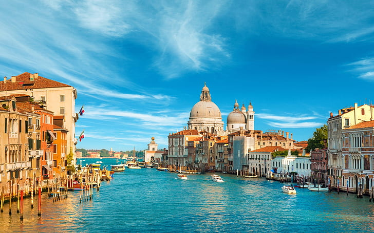

Venesia adalah sebuah destinasi wisata yang menarik dan memukau di dunia. Terletak di Italia, Venesia merupakan kota yang unik dengan pesonanya yang tak tertandingi. Kota ini terkenal dengan sistem kanal yang rumit dan jaringan jalanan airnya yang melingkari bangunan-bangunan bersejarah yang indah.
Salah satu daya tarik utama Venesia adalah suasana romantik dan atmosfer yang romantis. Kota ini sering dijuluki sebagai "Kota Cinta" dan menjadi destinasi impian bagi pasangan yang ingin merayakan momen istimewa mereka. Suasana yang tenang dan pemandangan yang memukau, dengan jembatan-jembatan elegan yang melintasi kanal-kanal, menciptakan suasana yang tak terlupakan bagi para pengunjung.